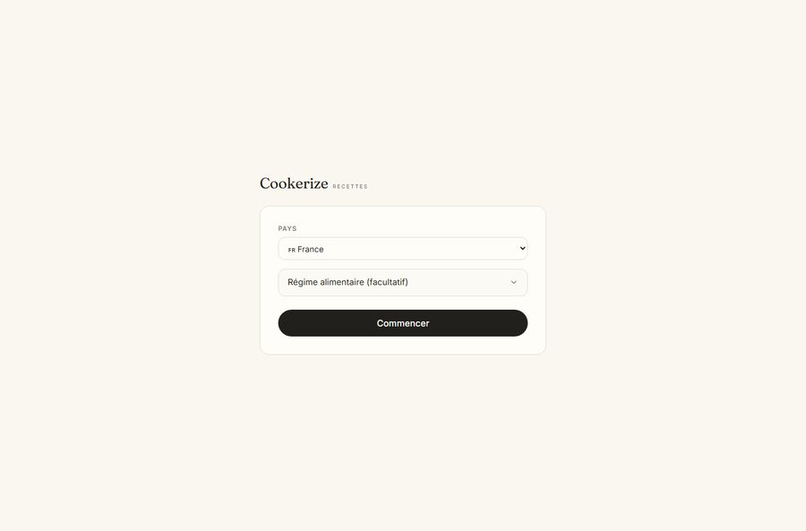
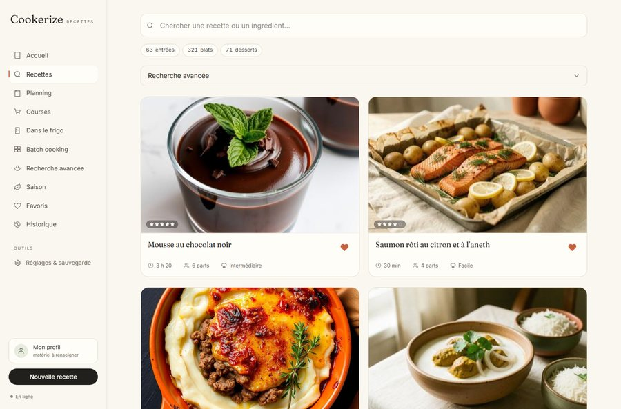
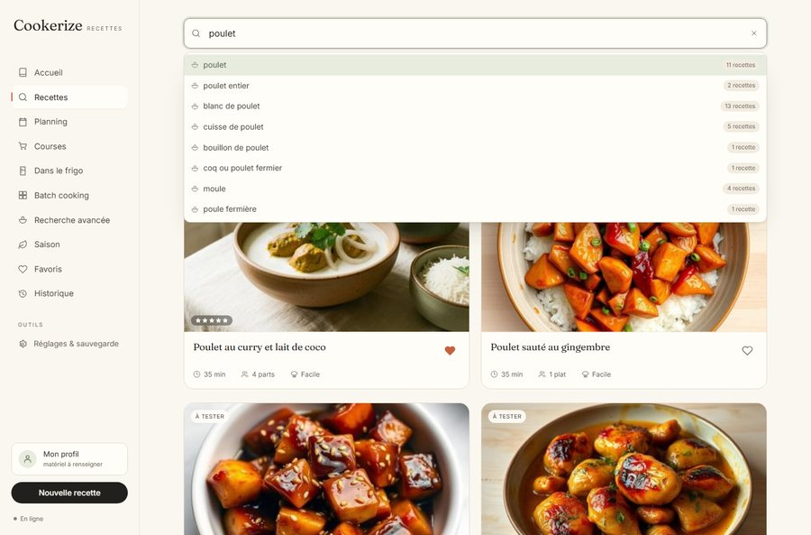
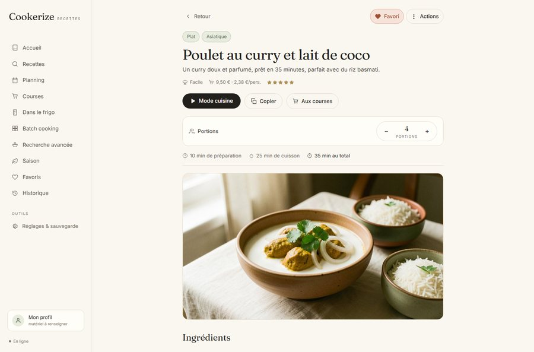
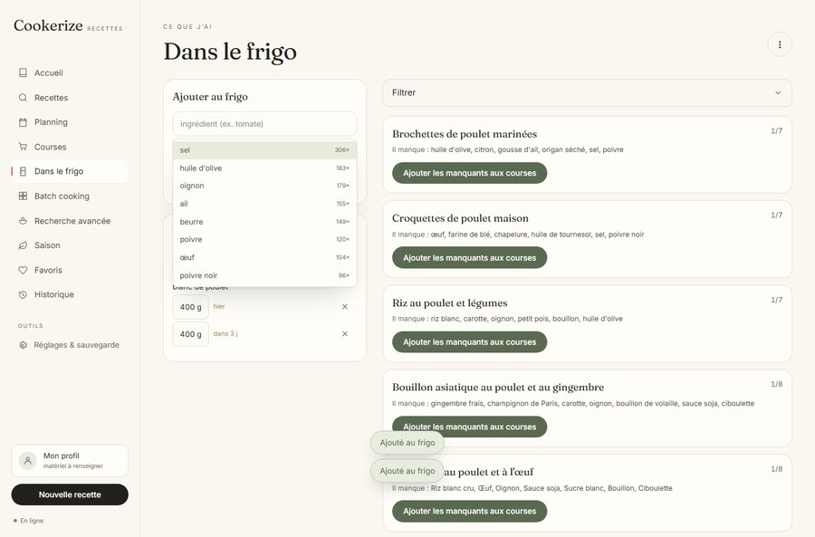
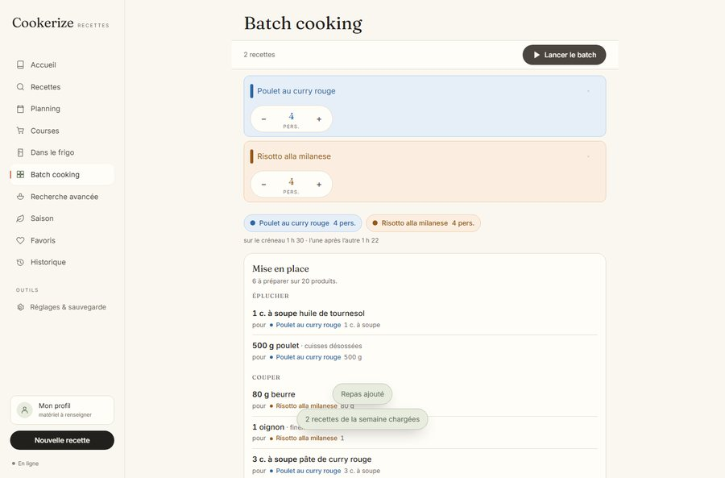

Tus recetas, por fin en un solo lugar
Cookerize es un cuaderno de recetas que funciona en tu bolsillo, sin red y sin cuenta. Crea las tuyas en unos segundos, mira lo que puedes cocinar con lo que hay en tu nevera, y deja que el plan de cocción lleve el reloj por ti.
Avísame del lanzamiento Ver cómo es
Próximamente en Google Play · Android · Versión gratuita con publicidad, suscripción para las funciones avanzadas
Lo que hace, y por qué es diferente
Crear una receta sin pelearse
Es el gesto número uno, y todo está pensado para él. Escribe tus ingredientes: se proponen las cantidades habituales, las unidades siguen tu país y los pasos se construyen a partir de lo que realmente has escrito. Tres formas de empezar: desde cero, a partir de una lista o duplicando una receta existente.
451 recetas ilustradas, listas para cocinar
Un catálogo de recetas clásicas y del mundo — 134 de ellas proceden de 36 países — cada una con su foto y sus pasos jugables. Añades las tuyas al lado, o partes de una de las nuestras.
«¿Qué puedo cocinar?»
Di lo que hay en tu nevera y Cookerize clasifica las recetas por lo que realmente puedes hacer: primero las que están completas, luego las que menos cosas les faltan.
La lista de la compra por pasillo
Se deduce de tu planificación, se ordena por pasillo del supermercado y, cuando marcas una línea, el ingrediente entra en la nevera. Ya no marcas dos veces lo mismo.
El plan de cocción que marca el ritmo
¿Preparas tres platos a la vez? Cookerize ordena los pasos para que todo llegue caliente, agrupa los gestos comunes, coloca los precalentamientos y pone los temporizadores. Es lo más delicado de la cocina, y ahí es donde la aplicación resulta más útil.
Sin conexión, sin cuenta
La aplicación funciona por completo sin red: tus recetas están en tu teléfono. No hace falta ninguna cuenta para usarla. La cuenta solo existe si quieres recuperar tu cuaderno en otro dispositivo.
Tus unidades, tu idioma
gramos u onzas, Celsius o Fahrenheit: la aplicación te pregunta tu país en el primer arranque y se mantiene en él, en todas partes. Las conversiones están hechas para ser útiles en la cocina, no para mostrar una precisión inútil.
Y para los suscriptores
La búsqueda por valores nutricionales: «menos de 400 calorías, más de 20 g de proteínas», con controles deslizantes de dos topes como para un presupuesto. Y la eliminación de la publicidad.
Cómo es






El lanzamiento se acerca
La aplicación está pasando sus últimas pruebas antes de su publicación en Google Play. Escríbenos si quieres que te avisemos, o participar en las pruebas.
Escribir al equipo